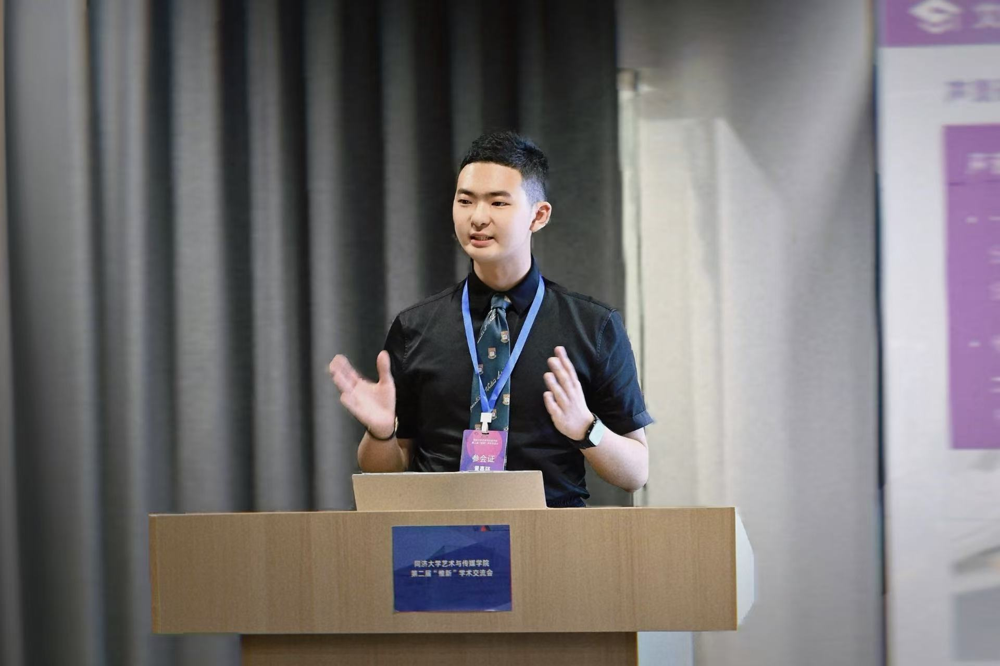
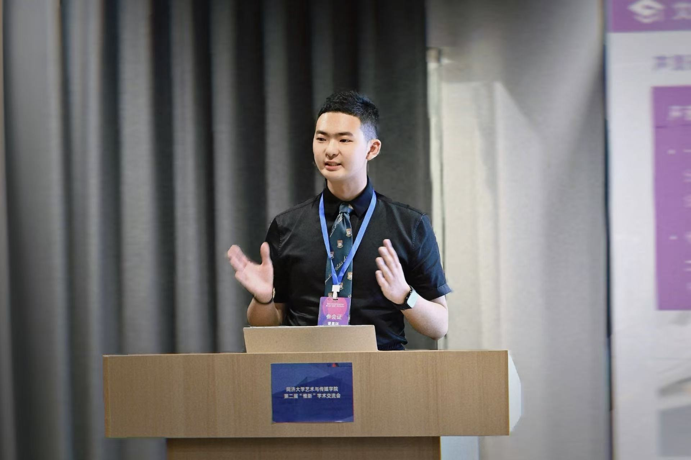

Education
教育背景
教育背景
MA in International Journalism, Shanghai International Studies University (SISU)
上海外國語大學 新聞學 文學碩士
上海外国语大学 新闻学 文学硕士
Three-year, research-oriented program, equivalent to MPhil
三年制研究型碩士項目，等同於哲學碩士 (MPhil)。
三年制学术学位硕士项目，等同于哲学硕士 (MPhil)。
MSocSc in Media Management, Hong Kong Baptist University (HKBU)
香港浸會大學 傳媒管理 社會科學碩士
香港浸会大学 传媒管理 社会科学硕士
Currently enrolled, and officially approved by SISU as part of a self-initiated dual-master academic track
獲上海外國語大學批准作為雙碩士項目在讀。
获上海外国语大学批准作为双硕士项目在读。
BA in Broadcasting (English), Shanghai International Studies University (SISU)
上海外國語大學 廣播電視學（英語） 文學學士
上海外国语大学 广播电视学（英语） 文学学士
Graduated with Excellence in Undergraduate Thesis Design.
畢業獲評本科優秀畢業論文（設計）。
毕业获评本科优秀毕业论文（设计）。
 
